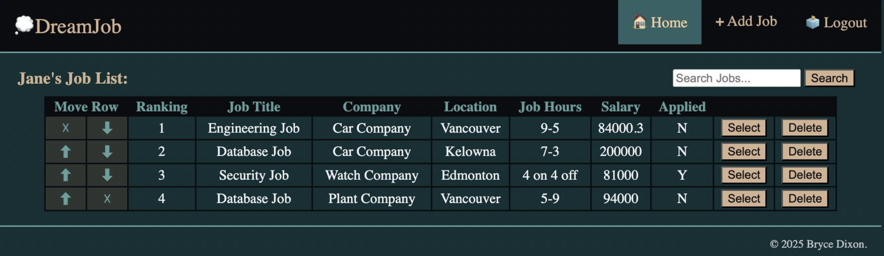

Here are some additional projects I have developed!

Full Stack Web Application: LAMP Framework (2025)
HTTP | HTML | CSS | JavaScript
A full-stack CRUD web application built with the LAMP stack featuring authenticated user accounts
and scalable user-specific data management through relational database architecture.
An interactive pathfinding visualization tool allowing users to design obstacle grids and weighted terrain while observing the A* algorithm calculate the lowest-cost route in real time.
Includes animated traversal of the final computed path.
2D Survival Game (2025)
Phaser | JavaScript | Tiled | Testing Plan
A 2D survival game where players battle waves of enemies, collect upgrades, and
progress through three unique levels.
Developed with MVC architecture, Agile practices, and an emphasis on intuitive UI/UX design.
A JavaFX game where players (BLUE) compete against an AI-controlled opponent (RED) to collect items (CIRCLES) within a toroidal map.
Features follow-based movement algorithms, modified flocking behaviours, and dynamic CPU target selection for autonomous agent decision-making.
Connect Four AI Engine (2026)
JavaFx | Minimax | Alpha-Beta Pruning
A playable Connect Four implementation featuring a CPU opponent (BLACK circle) powered by Minimax search and Alpha-Beta pruning for strategic decision-making.
Includes visualized AI move evaluation and turn-based gameplay interaction.